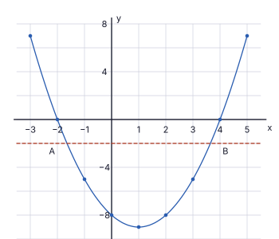
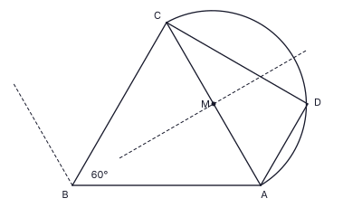

| (a) | |
| Interest = 82 800 − 72 000 = Rs 10 800 | 1 |
| Rate = 10 80072 000 × 100 | 1 |
| = 15% per annum | 1 |
| (b) | |
| Total paid = 12 × 6 520 = Rs 78 240 | 1 |
| Interest = 78 240 − 72 000 = Rs 6 240 | 1 |
| (c) | |
| Capital repaid each month = 72 000 ÷ 12 = Rs 6 000 | 1 |
| Amount owed during the 12 months: 72 000, 66 000, 60 000, … , 6 000; sum = 6 000 × (12 + 11 + … + 1) = 6 000 × 78 = Rs 468 000 (per month) | 1 |
| Interest = 468 000 × r100 × 112 = 6 240 | 1 |
| r = 6 240 × 12 × 100468 000 = 16% per annum | 1 |
| (d) | |
| 16% > 15%, so the annual interest rate under Supun’s method is higher than that of Hasini’s loan. | 1 |
Total marks: 10
| (i) | |
| y = −5 (symmetric about x = 1; the value at x = −1) | 1 |
| (ii) | |
| Suitable scales on both axes, axes labelled (e.g. 2 cm for 1 unit on x, 2 cm for 4 units on y) | 1 |
| All 9 points plotted correctly: (−3, 7), (−2, 0), (−1, −5), (0, −8), (1, −9), (2, −8), (3, −5), (4, 0), (5, 7) | 1 |
| Smooth parabola, minimum at (1, −9), passing through all points | 1 |
| (iii) | |
| (a) x = −2 and x = 4 | 1 |
| (b) y = (x + 2)(x − 4) (p = 2, q = −4) | 1 |
| (iv) | |
| (a) Line y = −2 drawn and read off: A ≈ (−1.6, −2), B ≈ (3.6, −2) | 1 |
| −1.6 < x < 3.6 (accept −1.7 to −1.5 and 3.5 to 3.7) | 1 |
| (b) AB = 3.6 − (−1.6) (using the values read) | 1 |
| AB ≈ 5.3 cm (accept 5.2 – 5.4; exact value 2√7 = 5.29) | 1 |

Total marks: 10
| (i) | |
| In right-angled triangle ABC (angle at B): BC = AC sin 18°20′ = 36 × sin 18°20′ | 1 |
| sin 18°20′ = 0.3145 (tables) | 1 |
| BC = 36 × 0.3145 = 11.322 ≈ 11.32 m | 1 |
| (ii) | |
| BD = 2 × BC = 2 × 11.32 = 22.64 m (C is the mid-point of BD) | 1 |
| tan ∠DEB = BDBE = 22.6436 | 1 |
| = 0.6289 | 1 |
| ∠DEB = 32°10′ (from tan tables) | 1 |
| (iii) | |
| Inclination of DE − inclination of AC = 32°10′ − 18°20′ | 2 |
| = 13°50′ > 13°; so the required result is true | 1 |
Total marks: 10
| (i) | |
| Area of triangle = 12(2x + 4)2 = 2x2 + 8x + 8 | 1 |
| Area of rectangle = (x + 5)(x − 3) = x2 + 2x − 15 | 1 |
| (2x2 + 8x + 8) − (x2 + 2x − 15) = 77 | 1 |
| x2 + 6x + 23 = 77 ⇒ x2 + 6x − 54 = 0 | 1 |
| (ii) | |
| x = −6 ± √(36 + 216)2 = −6 ± √2522 = −3 ± 3√7 | 1 |
| Positive value: x = −3 + 3 × 2.65 = 4.95 (the negative root is rejected) | 1 |
| x ≈ 5 cm | 1 |
| (iii) | |
| Equal sides = 2 × 5 + 4 = 14 cm | 1 |
| Longest edge (hypotenuse) = 14√2 = 14 × 1.41 | 1 |
| = 19.74 cm > 19 cm | 1 |
Total marks: 10
| (i) | |
| x + y = 60 | 1 |
| 90x + 160y = 7 150 (9x + 16y = 715) | 1 |
| Eliminating x: 9x + 9y = 540; subtract: 7y = 175 | 1 |
| y = 25 large packs | 1 |
| x = 60 − 25 = 35 small packs | 1 |
| (ii) | |
| Small pack contains n lanterns, large pack contains n + 4 | 1 |
| 35n + 25(n + 4) = 1 000 | 2 |
| 60n = 900 | 1 |
| n = 15 lanterns | 1 |
Total marks: 10
| (i) | |
| Mid-values 35.5, 45.5, 55.5, 65.5, 75.5; Σf = 40 | 1 |
| Σfx = 142 + 364 + 666 + 655 + 453 = 2 280 | 1 |
| Mean = 2 280 ÷ 40 = 57 kg per day | 1 |
| (ii) | |
| Expected total = 57 × 30 | 1 |
| = 1 710 kg | 1 |
| (iii) | |
| Income = 1 710 × 48 | 2 |
| = Rs 82 080 | 1 |
| (iv) | |
| Days with less than 51 kg: classes 31 – 40 (4 days) and 41 – 50 (8 days); minimum masses 31 kg and 41 kg | 1 |
| 4 × 31 + 8 × 41 = 124 + 328 = 452 kg | 1 |
Total marks: 10
| (i) | |
| AB = 8 cm drawn (7.9 – 8.1 accepted) | 1 |
| 120° at B constructed with two 60° arcs of the same radius (arcs visible), ∠ABX = 120° (118° – 122° accepted) | 1 |
| Bisector BY constructed with arcs visible, ∠ABY = 60° | 1 |
| (ii) | |
| C marked on BY with BC = 8 cm (compass arc from B), AC joined; triangle ABC is equilateral, AC = 8 cm (7.9 – 8.1) | 1 |
| (iii) | |
| Perpendicular bisector of AC drawn with arcs of equal radius from A and C visible | 1 |
| Mid-point M marked on AC | 1 |
| Semicircle on AC as diameter (radius 4 cm, centre M) drawn on the side of AC away from B | 1 |
| (iv) | |
| Line through A parallel to BC constructed (angle 60° copied at A, arcs visible) | 1 |
| D marked where it meets the semicircle (AD ≈ 4 cm, 3.9 – 4.1), CD joined (CD ≈ 6.9 cm, 6.8 – 7.0) | 1 |
| (v) | |
| ∠ADC = 90° (angle in a semicircle); ∠DAC = ∠ACB = 60° (alternate angles, AD ∥ BC); so ∠ACD = 180° − 90° − 60° = 30° | 1 |

Total marks: 10
| (i) | |
| In triangles BFE and CGE: ∠BEF = ∠CEG (vertically opposite angles) | 1 |
| ∠FBE = ∠GCE (alternate angles, AB ∥ DG) | 1 |
| BE = EC (E is the mid-point of BC) ∴ △BFE ≅ △CGE (angle, side, angle) | 1 |
| (ii) | |
| BF = CG (corresponding sides of congruent triangles) | 1 |
| BF ∥ CG (AB ∥ DC). One pair of opposite sides equal and parallel, so BFCG is a parallelogram (alternatively: the diagonals BC and FG bisect each other at E, since FE = EG) | 1 |
| (iii) | |
| In triangles AFH and BFE: ∠AFH = ∠BFE (vertically opposite angles) | 1 |
| ∠FAH = ∠FBE (alternate angles, AH ∥ BE since AD ∥ BC); hence ∠AHF = ∠BEF also; the triangles are equiangular | 1 |
| (iv) | |
| From similar triangles: AHBE = AFFB | 1 |
| AF = 25AB ⇒ FB = 35AB, so AFFB = 23 ⇒ AH = 23 BE | 1 |
| BE = 12BC = 12AD, so AH = 23 × 12 AD = 13 AD | 1 |
Total marks: 10
| (i) | |
| Volume of a pyramid = 13 × (2a)2 × 3a = 4a3; of 6 pyramids = 24a3 | 1 |
| Volume of cylinder = πr2 × 4r = 4πr3 | 1 |
| 24a3 = 4πr3 ⇒ a3 = π6 r3 | 1 |
| (ii) | |
| a3 = 3.14 × 6.336; lg a3 = lg 3.14 + 3 lg 6.3 − lg 6 | 1 |
| = 0.4969 + 3 × 0.7993 − 0.7782 = 0.4969 + 2.3979 − 0.7782 = 2.1166 ⇒ a3 ≈ 130.8 (130 – 131) | 1 |
| lg a = 2.1166 ÷ 3 = 0.7055 | 1 |
| a = 5.07 ≈ 5 cm | 1 |
| (iii) | |
| With a = 5: cuboid 10 × 10 × 15 = 1 500 cm3 | 1 |
| Pyramid = 13 × 100 × 15 = 500 cm3 | 1 |
| Remaining volume = 1 500 − 500 = 1 000 cm3 | 1 |
Total marks: 10
| (i) | |
| 11, 15, 19 | 1 |
| (ii) | |
| T13 = 11 + 12 × 4 | 1 |
| = 59 skips | 1 |
| (iii) | |
| S13 = 132 (11 + 59) | 1 |
| = 455 skips | 1 |
| (iv) | |
| Ishara: S14 = 142 [2a + 13 × 3] = 455 | 1 |
| 2a + 39 = 65 | 1 |
| a = 13 skips | 1 |
| (v) | |
| 11 + 4(n − 1) = 13 + 3(n − 1) ⇒ n − 1 = 2 | 1 |
| n = 3: the 3rd day (both skip 19 times) | 1 |
Total marks: 10
| (i) | |
| ∠OAP = ∠OBP = 90° (a tangent is perpendicular to the radius at the point of contact) | 1 |
| ∠OAP + ∠OBP = 180° (opposite angles); therefore PAOB is a cyclic quadrilateral | 1 |
| ∠AOB = 2∠ACB (angle at the centre is twice the angle at the circumference, standing on the same arc AB) | 1 |
| ∠APB + ∠AOB = 180° (opposite angles of the cyclic quadrilateral PAOB) | 1 |
| Therefore ∠APB + 2∠ACB = 180° | 1 |
| (ii) | |
| ∠PBA is equal to ∠PAB: naming | 1 |
| PA = PB (tangents drawn from an external point are equal), so △PAB is isosceles and the base angles are equal | 1 |
| ∠ACB is equal to ∠PAB: naming (C on the major arc, in the alternate segment) | 1 |
| Angle between the tangent PA and the chord AB = angle in the alternate segment (tangent–chord theorem) | 2 |
Total marks: 10
| (i) | |
| Volunteers who helped with at least one task = 90 − 8 = 82 | 1 |
| Exactly one task = 82 − 36 | 1 |
| = 46 | 1 |
| (ii) | |
| Let the number who helped with all three = x; then exactly two tasks = x | 1 |
| x + x = 36 (at least two tasks) | 1 |
| x = 18 | 1 |
| (iii) | |
| Let D and C only = y, F and C only = 2y; 6 + y + 2y = 18 (exactly two tasks) | 1 |
| 3y = 12; y = 4 | 1 |
| (iv) | |
| n(F) = F only + (D, F only) + (F, C only) + all three: 40 = F only + 6 + 8 + 18 | 1 |
| F only = 8 | 1 |
| Region | D only | F only | C only | D, F only | D, C only | F, C only | D, F, C | None |
|---|---|---|---|---|---|---|---|---|
| Number | d | 8 | c | 6 | 4 | 8 | 18 | 8 |
(The numbers who helped with decorations only and cleaning only are not fixed by the data; they satisfy d + c = 38.)
Total marks: 10